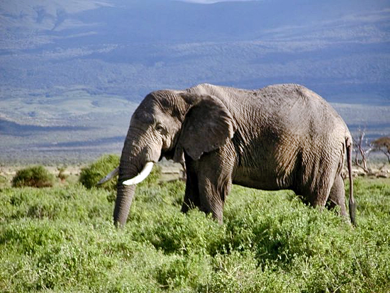

Slonovi!!!
Vrste slonova:
- Afrički slon
- Azijski slon
Afrički slonovi:
Afrički slon vrsta je slona. To je najveći živući kopneni sisavac na zemlji.
Afrički slonovi ranije su živjeli na područjima između Sahare i juga Afrike.
Trenutačno je njihova populacija ograničena na nekoliko nacionalnih parkova
i fondova u južnoj Africi zbog krivolova i uništavanja njihova staništa.

Težina i velićina afričkog slona:
| Težina |
Prosječna težina |
| 3600kg-7500kg |
4500kg |
Veličina mužjaka i ženki Afričkog slona:
| Mužjaci |
Ženke |
| 400cm |
300cm |
Azijski slon:
Azijski slon, često i indijdki slon, je nakon afričkog slona druga
danas najveća živuća kopnena životinja. Za razliku od afričkog rođaka,
nije ga teško pripitomiti, pa ga ljudi često love i koriste.
Težina i veličina Azijskog slona
| Mužjak |
Ženka |
| 5000kg |
2700kg |
I još jedna vrsta izumrlih slonova!:
Pokućni slon:
Posljednji od svoje vrste, predak svim vrstama slonova, narančaste guste i meke dlake
visok nekih 30-45cm i težak 20kg. Njegovo ime je FLOKI!!!!!!!!!!
NADAM SE KAJ JE STRANICA DOBRA JER SAM SE JAKO MUČIL!!!!!!!!!!!!!